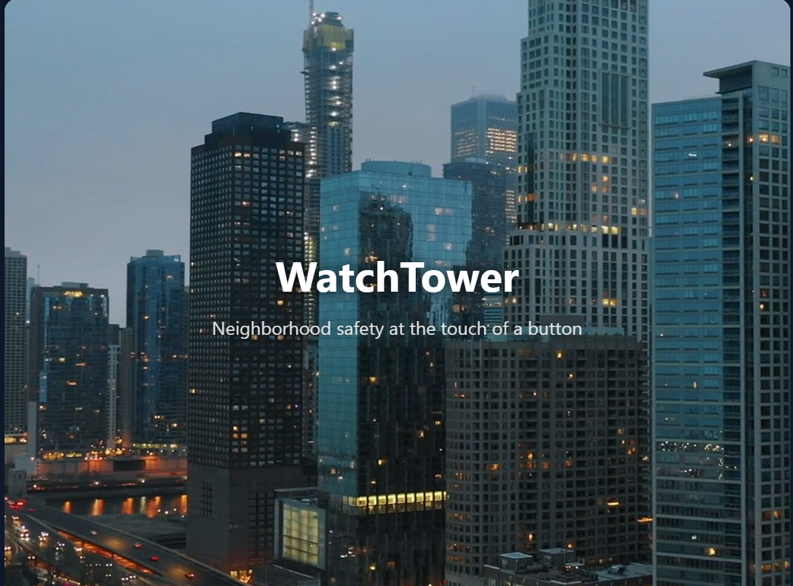

Watchtower is a front-end security-focused web application designed to track incidents, visualize severity levels, and provide a centralized dashboard for monitoring security events. The project emphasizes clean UI design, modular components, and real-world use cases aligned with cybersecurity and software development practices.
